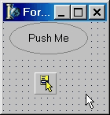
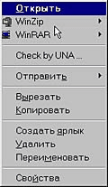
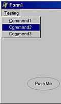
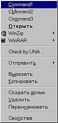

Shell Extensions и как с ними бороться (статья)
Shell Extensions и как с ними бороться
Думаю, вы замечали, что некоторые программы добавляют собственные пункты в системное контекстное меню. Например, WinRAR добавляет "Сжать" и "Распаковать в…", ICQ - "Переслать пользователю" и пр. Механизм, с помощью которого ваш код "внедряется" в оболочку Windows, называется Shell Extensions - именно о нем пойдет речь…
Определения
В дальнейшем, говоря "программист среднего уровня", мы будем подразумевать человека, который уже написал свой первый текстовый редактор и знаком с практикой создания собственных компонент.

Shell Extensions - набор сервисных функций Windows API, призванный обеспечить расширение базовых функций оболочки Windows Explorer за счет наших надстроек. В числе основных функций Shell Extensions:
| · | работа с системными контекстными меню; |
| · | работа с папками и объектами из пространства имен оболочки Windows (Мои Документы, Принтеры, Панель управления…); |
| · | использование механизма Drag&Drop; |
| · | создание и использование ярлыков. |
Итак…
Для реализации задуманного нам понадобятся интерфейсы IContextMenu и IShellFolder. Указатель на главный интерфейс IshellFolder, соответствующий "Рабочему столу" оболочки, можно получить, используя функцию SHGetDesktopFolder, объявление которой выглядит так:
function SHGetDesktopFolder (var ppshf: IShellFolder): HResult; stdcall;
Эта функция возвращает нам указатель на интерфейс IShellFolder, который возвращается в переменной ppshf. Далее допустим, что у нас в компоненте имеется поле под названием ShellObject типа String, в котором хранится путь к необходимому объекту (к примеру - C:\Windows\NotePad.exe), и что нам нужно получить его контекстное меню (рис. 2).

Для этого сначала используем метод из интерфейса IShellFolder:
function GetUIObjectOf (hwndOwner: HWND; cidl: UINT; var apidl: PItemIDList;const riid: TIID; prgfInOut: Pointer; out ppvOut): HResult; stdcall;
Параметры:
| · | hwndOwner - дескриптор родительского окна (0); |
| · | cidl - количество элементов, на которое указывает значение apidl (1); |
| · | apidl - параметр, представляющий собой уникальный идентификатор объекта; |
| · | riid - глобальный уникальный идентификатор системы Windows (IID_IContextMenu из файла ShlObj.pas); |
| · | prgfInOut - зарезервировано, должно быть nil; |
| · | ppvOut - переменная, которая получит указатель на "заказанный" интерфейс. |
После использования этого оператора нам понадобится обратиться к функциям WinAPI - для работы с контекстными меню. Это, в первую очередь:
Function CreatePopupMenu: HMENU; stdcall; Function TrackPopupMenu (hMenu: HMENU; uFlags: UINT; x, y, nReserved: Integer;hWnd: HWND; prcRect: PRect): BOOL; stdcall; Function DestroyMenu (Menu:HMENU):LogBool; stdcall;
Синтаксис первой и последней функции, я думаю, понятен и без разъяснений. Функция TrackPopupMenu, собственно, и выводит на экран контекстное меню. Параметры этой функции принимают значения:
| · | hMenu - дескриптор контекстного меню. Это тот самый Menu, который мы создали с помощью CreatePopupMenu; |
| · | uFlags - выравнивание относительно координат. Возможные значения: TPM_CENTERALIGN, TPM_LEFTALIGN, TPM_RIGHTALIGN, TPM_LEFTBUTTON, TPM_RIGHTBUTTON, TPM_RETURNCMD. Этот параметр используется для возврата команды (как будет показано ниже); |
| · | x, y - координаты, по которым будем "впрыгивать" наше меню; |
| · | nReserved - соответственно, приравниваем к нулю; |
| · | hWnd - дескриптор родительского окна; |
| · | prcRect - указатель на структуру TRect, которая задает "окно" в экранных координатах в пределах которого пользователь может щелкать без каких-либо исчезновений контекстного меню. Если = nil, то при нажатии мышкой за пределами контекстного меню оное исчезнет. |
Возвращаемое значение показывает наличие команды или ее отсутствие. Если True - пользователь выбрал пункт; False - соответственно, не выбрал.
А теперь - самое главное
Ну что ж, сделали мы Menu - остается наполнить его содержимым, соответствующим нашему ShellObject. Для этого узнаем сначала его идентификатор (PItemIDList) - сделаем это при помощи метода ParseDisplayName из интерфейса IshellFolder. Этот метод объявлен следующим образом:
function ParseDisplayName (hwndOwner: HWND; pbcReserved: Pointer; lpszDisplayName: POLESTR; out pchEaten: ULONG; out ppidl: PItemIDList; var dwAttributes: ULONG): HResult; stdcall;
Расклад такой:
| · | lpszDisplayName - имя объекта, для которого надо найти PItemIDList; |
| · | pchEaten - возвращает символы, которые были правильно разобраны; |
| · | ppidl - как раз то, что нам нужно (сохраняем в FItemIDList); |
| · | dwAttributes - атрибуты для только что найденного FItemIDList. |
Но здесь следует проявлять осторожность. Как вы помните, нам нужно вывести контекстное меню для C:\Windows\NotePad.exe. Но сделать это прямо нельзя. Поэтому найдем сначала PItemIDList для папки C:\Windows - контейнера нашего NotePad.exe. Пишем:
OleCheck (ShellFolder.ParseDisplayName (Handle,nil,StringToOleStr (ExtractFileDir (ShellObject)), FEaten,FItemIDList,FAtt));
где:
| · | ShellFolder - значение, которое мы получили из SHGetDesktopFolder; |
| · | FEaten,FAtt - как я уже говорил, мне они не пригодились - но, чем черт не шутит, лучше их все-таки придержать; |
| · | FItemIDList - сохраняем, он нам еще понадобится. |
После удачного завершения надо бы перейти к классу родителя нашего NotePad.exe. Воспользуемся для этого функцией IShellFolder.BindToObject, объявленной следующим образом:
Function BindToObject (pidl: PItemIDList; pbcReserved: Pointer;const riid: TIID; out ppvOut): HResult; stdcall;
Тут:
| · | pidl - наш FItemIDList; |
| · | riid - в этом случае указывает на экземпляр IID_IshellFolder; |
| · | ppvOut - указывает, куда нам его запихнут (скажем, ShellFolder1). |
И после очередной строчки кода:
OleCheck (ShellFolder.BindToObject (FItemIDList,nil,IID_IShellFolder,ShellFolder0));
мы получим в переменной ShellFolder0 указатель на интерфейс IShellFolder, соответствующий папке C:\Windows. Теперь мы можем узнать PItemIDList нашего NotePad:
OleCheck (ShellFolder0.ParseDisplayName (Handle,nil,StringToOleStr (ExtractFileName (ShellObject)),FEaten,FItemIDList,FAtt));
Для чего все это было написано?
Теперь мы без зазрений совести можем приступать к выводу нашего контекстного меню:
OleCheck (ShellFolder0.GetUIObjectOf (Handle,1,FItemIDList,IID_IContextMenu,nil,ICM)); Menu:=CreatePopupMenu; Try ICM.QueryContextMenu (Menu,1,$7FFF,CMF_EXPLORE or CMF_CANRENAME); Command:=TrackPopupMenu (Menu, TPM_LEFTALIGN or TPM_LEFTBUTTON or TPM_RETURNCMD,100,100,0,Handle,nil); If Command then Begin ICmd:=Longint (Command)-1; OleCheck (ICM.GetCommandString (ICmd,GCS_VERBA,nil,CommandStr,SizeOf (CommandStr))); CHandled:=False; DoCommandEvent (StrPas (CommandStr),CHandled); if not CHandled then begin FillChar (ICI,SizeOf (ICI),#0); ICI.cbSize:=SizeOf (ICI); ICI.hwnd:=Handle; ICI.lpVerb:=MakeIntResource (ICmd); ICI.nShow:=SW_SHOWNORMAL; OleCheck (ICM.InvokeCommand (ICI)); end; End; Finally ICM:=nil; End;
Что тут написано. Во-первых - вызов интерфейса IcontextMenu, сопряженного с объектом FItemIDList папки ShellFolder0. Во-вторых, создание дескриптора пустого контекстного меню; заполнение контекстного QueryContextMenu; использование команды TrackPopupMenu для вывода контекстного меню в точку (100, 100).
Обработка результата команды TrackPopupMenu:
| · | переменная Command типа LongBool преобразуется в тип Longint; |
| · | CommandStr - переменная, в которую заносится название команды; |
| · | DoCommandEvent - процедура обработки события; |
| · | структура ICI типа _CMINVOKECOMMANDINFO задает параметры, необходимые для запуска на исполнение кода, приписанного выбранному пункту меню по умолчанию; |
| · | InvokeCommand (ICI) - запуск кода по умолчанию. |
Недоработки…
…а где их нет? То есть, конечно, этот компонент работает, я его использую, но в нем (пока) отсутствуют некоторые полезные функции. К примеру, если вы заглянете в файл ShlObj.pas, то обнаружите, что там, помимо использованного нами интерфейса IcontextMenu, объявлены также интерфейсы IContextMenu2 и IContextMenu3, которые используются для расширения базовых функций интерфейса (к примеру, IContextMenu2 используется для работы с элементами подменю). Кроме того, небольшая доработка компонента даст возможность включать в него свои собственные пункты меню (сравните рис. 3 и рис. 4).

Так что не стоит рассматривать эту статью как исчерпывающее руководство по Shell Extensions - она призвана всего лишь пробудить в вас аппетит к дальнейшим исследованиям.
2004.05.07 Автор: Михаил Продан
http://www.cpp.com.ua